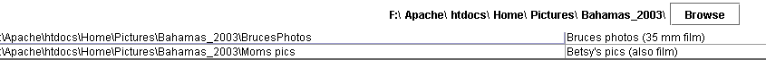
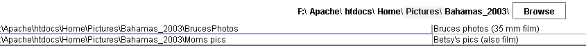
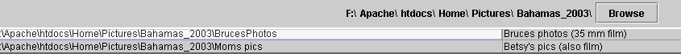

|
Selecting a directory to work in We've already seen the obvious way to select a working directory - the Browse button. But there are several other ways to select a directory. Notice that once you're in a directory, you'll se the current directory to the left of the Browse button.  Each directory (the words between the "\" characters) can be clicked on, and you'll go to that directory as if you used the Browse button and selected it. For example, if you clicked on the directory "Pictures" as highlited below  you'd go to the "F:\Apache\htdocs\Home\Pictures" directory. It gets better. Notice, that every subdirectory of the current directory is listed just below the Browse button and the curent directory. Click on the directory name as highlighted below, and you'll go there. 
|